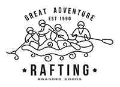

Overview
Purpose
The Purpose of this website is for the easy reach and visability to allow you (the user) have a easy and informative way to create the best outing for you and your loved ones!
Audience
Our water rafting website caters to adventure enthusiasts and nature lovers seeking thrilling experiences on the river. Our target audience includes individuals aged 18-55, primarily residing in both urban and suburban areas, who crave excitement, outdoor challenges, and unforgettable moments in nature
Scenarios: Scenario: Sarah is planning a weekend getaway with her friends and wants to try something adventurous. She searches online for outdoor activities and comes across your website. What information would she expect to find on your website to convince her to choose your rafting tours? Answer: Sarah would expect to find detailed descriptions of the rafting tours, including the difficulty levels, scenic routes, safety measures, and equipment provided. She would also look for customer reviews and testimonials to gauge the experiences of past participants, as well as pricing information and booking options for convenience. Scenario: The Rodriguez family is planning their annual summer vacation and wants to include a thrilling outdoor activity in their itinerary. As parents, they are concerned about the safety of their children. How does your website address their safety concerns and reassure them about the suitability of your rafting tours for families? Answer: Our website features a dedicated section on safety measures, where we highlight our experienced guides, certified equipment, thorough safety briefings, and adherence to industry standards. We also provide information on age requirements, recommended tour options for families with children, and any special accommodations available to ensure a safe and enjoyable experience for all participants. Scenario: Mark is an experienced rafter who is planning a reunion trip with his college friends. They are looking for an adrenaline-pumping adventure and want to explore challenging rapids. How does your website cater to experienced rafters like Mark, providing them with the excitement and thrill they seek? Answer: For experienced rafters like Mark, our website showcases our advanced-level tours, featuring exhilarating rapids, technical challenges, and breathtaking scenery. We provide detailed descriptions of the rapids, water conditions, and skill requirements, allowing Mark and his friends to choose a tour that matches their level of expertise and thirst for adventure. Additionally, we offer customizable options for private group bookings, allowing them to tailor their experience to their preferences and skill levels.
Branding
Website Logo

Style Guide
Color Palette
Primary-color: #E78F8E Secondary-color: #ACD8AA Accent1-color: #F48498 Accent2-color: #F2CCC3
Paletter URL: https://coolors.co/92977e-e6e18f-fefcad-eadda6-fffae2Typography
Heading Example Font
Normal Text/Paragraph Example Font
Element
Colored Callout Example Font
Element
Navigation
Wireframes
Home Page Wireframe

About Us Page Wireframe